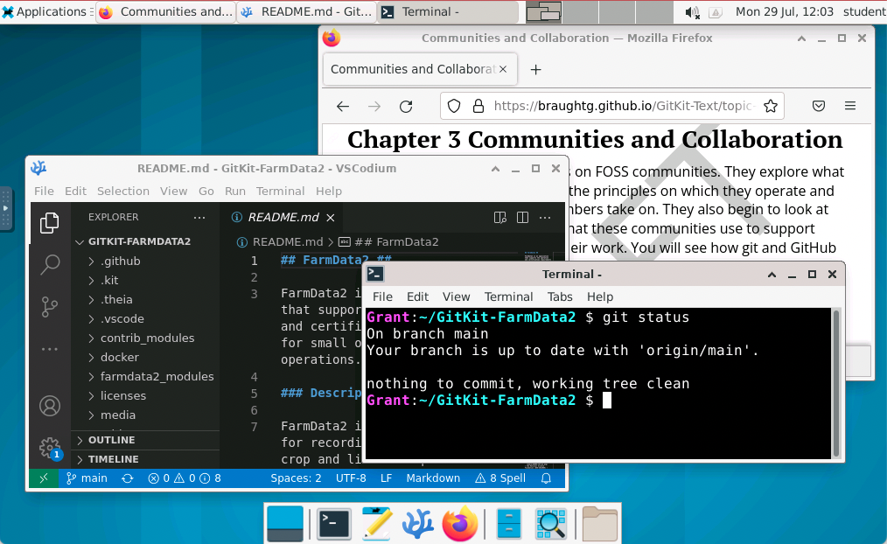
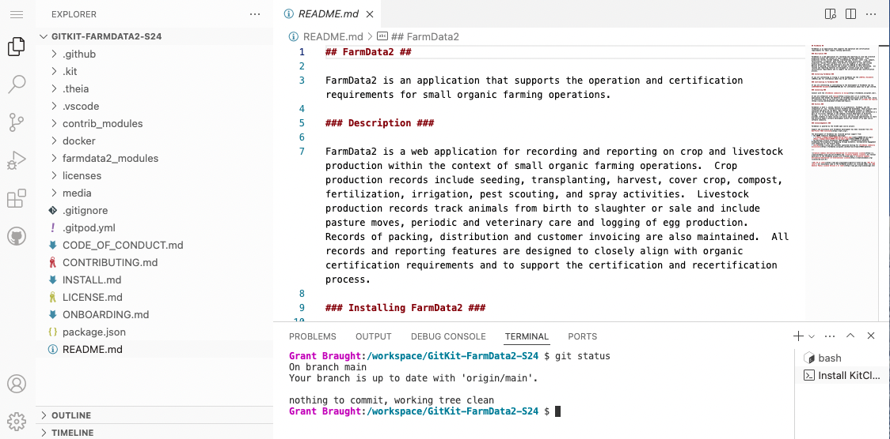

Section 1.1 Instructor Guide Introduction
Watermark text: DRAFT FOR REVIEW ONLY
This instructor guide contains everything you need to know to use GitKit in your course. Subsection 1.1.1 Quick Start gives a concise guide that may be sufficient if you have used GitKit previously and just need the bare minimum of reminders of what to do. Subsection 1.1.2 Adopting and Using the GitKit provides a more detailed guide to getting familiar with the GitKit and using it in your course.
For help with GitKit, you can chat with us on Discord.
1
discord.gg/83Sb4csCeTSubsection 1.1.1 Quick Start
This quick start guide provides a very brief outline of the steps necessary to use the GitKit in a course. It is intended to be sufficient for instructors who have used the GitKit previously and just need a reminder of the necessary steps. Subsection 1.1.2 provides a more detailed guide to adopting the GitKit for use in a course.
- Create a Runestone courseusing the GitKit
2
guide.runestone.academy/InstructorGuide-6.htmltext3
runestone.academy/ns/books/published/gitkitlinux/the-gitkit-book.html?mode=browsing -
Copy the Course Packfor the GitKit from the gitkitlinux base course into your course if you would like to use the provided assignments.
4
guide.runestone.academy/working-with-assignments-chap.html#instructor-interface_copying-assignments-4Note that the reading assignments in the course pack include sections that allow students to elect to participate in a research project aimed at (1) understanding what they think and know about open source tools and techniques and (2) assessing the effectiveness of the GitKit. The inclusion of these sections is option and may be removed at the discretion of the instructor. See Subsection 1.1.7 Creating a Runestone Course using the GitKit Text for additional information. - Manage the students in your courseeither by registering them or by having them self-register.
5
guide.runestone.academy/InstructorGuide-7.html -
Click to Deploy the GitKit FarmData2 repositoryto use as the upstream.
6
gitpod.io/?autostart=true&useLatest=true&editor=xterm#script_url=https%3A%2F%2Fgitlab.com%2Fhfossedu%2Fkits%2Fgitkit-deployer-gitpod%2F-%2Fraw%2Fmain%2Fdeploy.yaml%3Fref_type%3Dheads/https://github.com/HFOSSedu/GitKit-Deployer-GitPodOne deploy of the GitKit FarmData2 repository can support up to 32 students. Perform as many deploys as necessary for your course. Be sure to give each deploy a distinct name. - Copy the URL(s) of the deployed GitKit FarmData2 upstream(s) and make it (them) available to your class.
- Please consider clicking the link to the brief survey that is included in the output of the GitKit deployer. Your feedback helps us to better understand where and how the GitKit is being used. This survey can also be accessed here.
7
drexel.qualtrics.com/jfe/form/SV_81y8BL0zy3fBw22 - Review the chapters, slides and instructor notes in Subsection 1.1.10, and create assignments as appropriate for your course.
- Review and merge student Pull Requests into the upstream just before or during the class that covers Chapter 4.
- Merge the
addRound2Conflictsbranch into the upstream just before or during the class that covers Chapter 5.
Subsection 1.1.2 Adopting and Using the GitKit
This section outlines a process for learning more about the GitKit and adopting it for use in a course.
- Read Subsection 1.1.3 Delivering GitKit to understand the basic structure of the GitKit and the variety of ways that it has been delivered to learners.
- Read Subsection 1.1.4 GitKit Content to learn about the key concepts, terminology and skills contained in each chapter of the GitKit.
- Read Subsection 1.1.5 Student Development Environments to learn about the two development environments that can be used with the GitKit and select one for use in your course.
- Read Subsection 1.1.6 The FarmData2 Project: to learn just a little bit about the FarmData2 project that was used to create the GitKit.
- Consider doing the GitKit for yourself as described in Subsection 1.1.8. It is by far the best way to prepare to deliver the GitKit to a class.
- Follow the steps in Subsection 1.1.7 Creating a Runestone Course using the GitKit Text to create a Runestone course using the GitKit text for your class.
- Follow the steps in Subsection 1.1.9 Deploying the GitKit to deploy the GitKit for use in your course.
- Refer to Subsection 1.1.10 Instructor Materials for links to the chapters, the class slides, and instructor notes as you teach each chapter of the GitKit.
- Refer to Subsection 1.1.11 Contributing to GitKit for information about contributing to the GitKit including where to report typos, errors, suggested improvements or bugs.
Subsection 1.1.3 Delivering GitKit
The GitKit content is broken into 4 chapters (See Subsection 1.1.4). Each chapter of the text contains the set of hands-on exercises to be completed by the students. These exercises are not intended to stand alone. They require some prior introduction to the concepts and terminology that they use. A separate set of slides are provided that instructors can use or adapt to introduce the necessary concepts and terminology before students complete the hands-on exercises.
In a nominal use of the GitKit:
- The instructor introduces each chapter by using or adapting the provided slides in a 50-75 minute class period.
- Students complete the hands-on activities contained in the chapters of this text as 2-3 hours of homework or during an assigned lab period.
While the GitKit was designed for nominal delivery in four 50-75-minute periods with 2-3 hours of additional hands-on work by the students, instructors have found the GitKit to be adaptable to different educational settings, student experience levels and learning objectives.
- Limited Coverage: The first two GitKit topics form a cohesive unit and can be completed without continuing onto the final two topics. Two examples of how this can be used include:
- Lower Level Courses: In lower level courses, or with less experienced students, the first two topics could be spread over a longer time with the hands-on activities being completed in class.
- A One Day Workshop: An organization delivered the GitKit as a one-day workshop for students from low-income, first-generation, underrepresented minority backgrounds. This workshop covered just the first two GitKit topics.
- Students with Prior git Experience: An instructor with students who have had prior exposure to git fundamentals (but not GitHub or the forking workflow) have skipped most of the class materials and used the hands-on activities as in-class lab activities rather than homework.
- Alternative In-Class Activities: Instructors have had success using Process Oriented Guided Inquiry (POGIL) activities in class in place of the slides provided with GitKit.
Subsection 1.1.4 GitKit Content
The content of the GitKit is broken into the chapters below. For each chapter the key topics and activities are outlined and links are given to the slides, the chapter of the text containing the hands-on exercises and instructor notes for the chapter.
- Introduces Free and Open Source Software (FOSS) communities, and how they collaborate using Git, GitHub and the forking workflow.
- Provides hands-on practice with the issue tracker, and forking and cloning of a repository.
- Introduces feature branches, commits, and pull requests as part of the forking workflow.
- Provides practice with creating and switching branches, staging and committing changes, pushing branches to origin and submitting pull requests.
- Introduces how merges into the upstream can result in a developer’s origin and clone becoming out of synch, and explains how to re-synchronize.
- Provides practice with setting an upstream remote, pulling (non-conflicting) changes from upstream, and deleting feature branches. The exercises also provide repetition of practice with the skills from the previous chapters.
- Introduces how merging of changes into the upstream can lead to merge conflicts, how they are found and represented, and how they can be resolved.
- Provides practice with understanding merge conflicts, merging main into a feature branch, using a graphical merge tool and updating a pull request.
Subsection 1.1.5 Student Development Environments
The GitKit provides a cloud based development environment that students use to complete the hands-on GitKit activities. This development environment is called a KitClient. A KitClient is a pre-configured containerized development environment that provides all of the tools and configuration necessary to complete the activities. The KitClient also includes the Kit-tty Virtual Assistant (See Subsubsection 1.1.5.1 and a set of automations that simulate project community (See Subsubsection 1.1.5.2).
There are currently two KitClients that can be used with GitKit and the instructor may choose the KitClient to use based on the needs of their course and students.
- Linux Desktop KitClient: Figure 1.1.1 shows the Linux KitClient where students complete the hands-on activities in a complete Linux virtual desktop environment.

Figure 1.1.1. The Linux KitClient development environment. - VSCode KitClient: Figure 1.1.2 shows the VSCode KitClient in which students complete the hands-on activities in the VSCode interface.

Figure 1.1.2. The VSCode development environment.
Both of these KitClients run remotely within GitPod Workspaces and students interact with them through a Web browser. To run a KitClient, students will need will need to have a free GitPod account, which they will created as a part of the activities.
There is a different edition of this text for each of the KitClients. The texts provide an equivalent experience, but adapt content to the specifics (e.g. user interface elements) of the KitClient as necessary. The instructor will adopt the text for the KitClient that has been chosen for the course (see Subsection 1.1.7).
Subsubsection 1.1.5.1 The Kit-tty Virtual Assistant
The Kit-tty (a play on Kit and TTY), pronounced kitty, is a virtual assistant built into the development environments (i.e. KitClients) that catches common student errors and provides hints on how to perform activity steps correctly. The Kit-tty has been designed to catch and correct student errors that were frequently observed in early uses of the GitKit. Many of the errors recognized by the Kit-tty are those that typically are not discovered until students progress several steps further into the activity, at which point they require more advanced git skills to undo.
For example, the Kit-tty intervenes when a student attempts to:
- commit to the main branch (an action that should not happen in the forking workflow).
- merge a feature branch into main (instead of vice versa).
- set the upstream remote to the origin (instead of the upstream).
- clone the upstream (rather than their fork).
- clone one repository inside of another.
Subsubsection 1.1.5.2 Community Automations
Community automations perform actions and comment on tickets in the issue tracker and on pull requests. These actions and comments are designed to simulate some common types of interaction with project maintainers and other FOSS community at appropriate points in the learning activities.
For example:
- When claiming an issue by adding a comment to its ticket in the issue tracker. An automation notices this comment, assigns the issue to the student (if it hasn’t already been assigned to someone else). The automation then also responds personally as a maintainer might: "Great! I assigned you (@TheirUsername) to the issue. Have fun working on it!"
Subsection 1.1.6 The FarmData2 Project
The upstream repository deployed by the GitKit was captured from the FarmData2 project. FarmData2 aims to support farmers in the day-to-day operation and record keeping needs of their small organic diversified vegetable farms.
8
github.com/DickinsonCollege/FarmData2While FarmData2 focuses on farming operations, students completing the GitKit activities work only with documentation files in markdown. Thus, there is no farming knowledge required to compete the GitKit.
Current development work on FarmData2 is occurring in the FarmData2 Organization on GitHub.
9
github.com/FarmData2Subsection 1.1.7 Creating a Runestone Course using the GitKit Text
The GitKit text is an e-text that is available on Runestone Academy. It contains a large number of interactive elements, many of which are auto-graded and provide instant feedback to students as they work through the GitKit. If you are not familiar with Runestone Academy it is recommended that you read the first 6 sections of the Using eBooks with Runestone Academy guide to familiarize yourself with it.
10
runestone.academy/11
runestone.academy/ns/books/published/instructorguide/InstructorGuide.htmlOnce you are familiar with Runestone Academy, use the following steps to adopt the GitKit text for a course:
- Create a Runestone courseusing the GitKit (Linux Desktop Edition)
12
guide.runestone.academy/InstructorGuide-6.htmlor the GitKit (VSCode Edition)13
runestone.academy/ns/books/published/gitkitlinux/the-gitkit-book.html?mode=browsingof the text.14
runestone.academy/ns/books/published/gitkitvscode/the-gitkit-book.html?mode=browsing -
You can either create assignmentsfor your students from the GitKit sections and exercises, or you can Copy the Course Pack
15
guide.runestone.academy/working-with-assignments-chap.htmlfor the GitKit from the gitkitlinux base course into your course.16
guide.runestone.academy/working-with-assignments-chap.html#instructor-interface_copying-assignments-4The course pack includes a reading assignment and a problem assignment for each of the chapter of the GitKit text (except Chapter 1 Instructor Guide). The provided reading assignment for each chapter includes all sections of the chapter and is auto-grading based on student interaction with each of he chapter’s sections. The provided problem assignment for each chapter includes every interactive exercise in the chapter. Every exercise that can be auto-graded is graded using % Correct and the students last answer. If you adopt the course pack you can modify the sections and questions that are included in the assignments, how they are graded and also add your own questions. See the Working with Assignmentssection of the Using eBooks with Runestone Academy17
guide.runestone.academy/working-with-assignments-chap.htmlguide for more details.18
guide.runestone.academy/InstructorGuide-3.htmlThe reading assignments in the course pack include sections that allow students to elect to participate in a research project aimed at (1) understanding what they think and know about open source tools and techniques and (2) assessing the effectiveness of the GitKit. In addition, there are surveys at the end of each chapter by which students can provide feedback to help improve the GitKit for future students.-
Section 2.1 and Section 5.10 are a pre/post survey pair. These surveys aim to help the authors better understand the impact and effectiveness of the GitKit.The Section 2.1 also allows students to consent to providing the GitKit authors with their responses to all of the GitKit exercises. If you would like to provide the GitKit authors with exercise responses from students in your course who consented please contact Dr. Braught (braught@dickinson.edu) Professor of Computer Science at Dickinson College for additional information.
- Section 2.11, Section 3.10, Section 4.9, and Section 5.9 ask for feedback on each of the individual chapters and will be used to help improve future versions of the GitKit.
Completion of any of these surveys is completely optional. The authors hope that you will leave these sections in the assignments to give your students the option to complete them. However, if you prefer not to include them they can be removed from the reading assignments in Assignments tab on the Instructor’s Page for your course.These surveys have been approved by the Institutional Review Board (IRB) at Western New England University. If you have any questions about this study, you may contact either: Faculty contact: Dr. Ellis (ellis@wne.edu) Professor, Computer Science and Information Technology department, Western New England University, or IRB contact: Dr. Jess Carlson, Professor of Psychology, jessica.outhouse@wne.edu. -
- Manage the students in your courseeither by registering them or by having them self-register.
19
guide.runestone.academy/InstructorGuide-7.html
Subsection 1.1.8 Doing the GitKit Yourself
By far the best, and highly recommended, way to prepare to deliver the GitKit is to do it yourself by playing the role of both the instructor and the student simultaneously. Use the following steps to do the GitKit yourself:
- Follow the steps in Subsection 1.1.9 Deploying the GitKit to deploy a GitKit FarmData2 upstream for you to use for practice.
- For each Chapter in the text, find the section of Subsection 1.1.10 Instructor Materials for that chapter:
- Download and review the slides for the chapter and their speaker notes.
- Review the Slide Notes for the chapter.
- Review the To-Do List for the chapter for a list of tasks to be done before the class.
- Complete the exercises in the chapter while simultaneously following along with the Exercise Notes for the chapter.
- When you are done, you can delete the practice GitKit FarmData2 repository that you created.
Subsection 1.1.9 Deploying the GitKit
To use the GitKit the instructor for the course must deploy one or more instances of it. Deploying an instance of the GitKit creates a repository that students use as the upstream repository for the hands-on activities.
The repository that is created contains the code, documentation and history from the FarmData2 project (see Subsection 1.1.6) and has an issue tracker that is populated with the tickets that are used in the GitKit activities. This repository is also configured to interact with the KitClient to install the Kit-tty virtual assistant (see Subsubsection 1.1.5.1) and to provide simulated community automations (see Subsubsection 1.1.5.2).
Use the following steps to deploy an instance of the GitKit FarmData2 repository for use in your course:
- Identify the GitHub space where you would like to deploy the GitKit FarmData2 repository. The GitHub space can be your GitHub account or a GitHub organization that you have created for your course and for which you have write permission.
- Visit GitHub using this link to create a New personal access token (classic)with:
20
github.com/settings/tokens/new- All "repo" permissions.
- "workflow" permission.
- "read:org" permission under "admin:org".
- Be sure to copy your access token.
- Click this link to Deploy the GitKit FarmData2 repository.
21
gitpod.io/?autostart=true&useLatest=true&editor=xterm#script_url=https%3A%2F%2Fgitlab.com%2Fhfossedu%2Fkits%2Fgitkit-deployer-gitpod%2F-%2Fraw%2Fmain%2Fdeploy.yaml%3Fref_type%3Dheads/https://github.com/HFOSSedu/GitKit-Deployer-GitPod - Respond to the deployer prompts that appear in the window. It will ask you for:
- The name of the repository. We recommend "GitKit-FarmData2".
- You GitHub username to deploy into your GitHub space, or the name of a GitHub organization to which you have write permission to deploy into that organization’s GitHub space.
- The personal access token that you created.
- Wait for the deployer to complete. This typically takes several minutes because the deployer must create the issues in the issue tracker slowly to avoid being rate-limited by the GitHub API.
-
When the deployer completes it will generate output similar to the following that shows the URL of your deployed GitKit FarmData2 repository.
Your new repository is ready. Give the URL below to your students. https://github.com/someLocation/GitKit-FarmData2Copy the URL of the repository and distribute it to your students using e-mail, LMS or whatever means is convenient for you. -
Note that each deployed GitKit can support up to 32 students. If you have more than 32 students, you will need to repeat steps 4-7 to create additional deploys.Each deployed repository must have a unique name. We recommend appending suffixes to "GitKit-FarmData2" for example "GitKit-FarmData2-group1", "GitKit-FarmData2-group2", etc.
- Please consider clicking the link to the brief survey that is included in the output of the GitKit deployer. Your feedback helps us to better understand where and how the GitKit is being used. This survey can also be accessed here.
22
drexel.qualtrics.com/jfe/form/SV_81y8BL0zy3fBw22
Subsection 1.1.10 Instructor Materials
- [ Slides| Slide Notes | To-Do | Exercise Notes ]
23
github.com/HFOSSedu/GitKit-Text/tree/main/materials/slides/Ch2-CommunitiesAndCollaboration.pptx?raw=true
- [ Slides| Slide Notes | To-Do | Exercise Notes ]
24
github.com/HFOSSedu/GitKit-Text/tree/main/materials/slides/Ch3-WorkingLocallyAndUpstreaming.pptx?raw=true
- [ Slides| Slide Notes | To-Do | Exercise Notes ]
25
github.com/HFOSSedu/GitKit-Text/tree/main/materials/slides/Ch4-StayingSynchronized.pptx?raw=true
- [ Slides| Slide Notes | To-Do | Exercise Notes ]
26
github.com/HFOSSedu/GitKit-Text/tree/main/materials/slides/Ch5-MergeConflicts.pptx?raw=true
Subsection 1.1.11 Contributing to GitKit
All of the work on the GitKit is being conducted under open licenses (GPL3, CC-BY-NC-SA) and we welcome participation, contribution and derivative work.
For any kind of question, difficulty, suggestion, or suspected bug, chatting with us on Discord is a great place to start.
27
discord.gg/83Sb4csCeTErrors, typos or suggestions for the textbook can be submitted using the GitKit-Text Issue Tracker.
28
github.com/HFOSSedu/GitKit-Text/issuesActive work on the deployer and the KitClients takes place in the Kits section of the HFOSSedu GitLab Organization.
29
gitlab.com/hfossedu/kits30
gitlab.com/hfossedu/kits